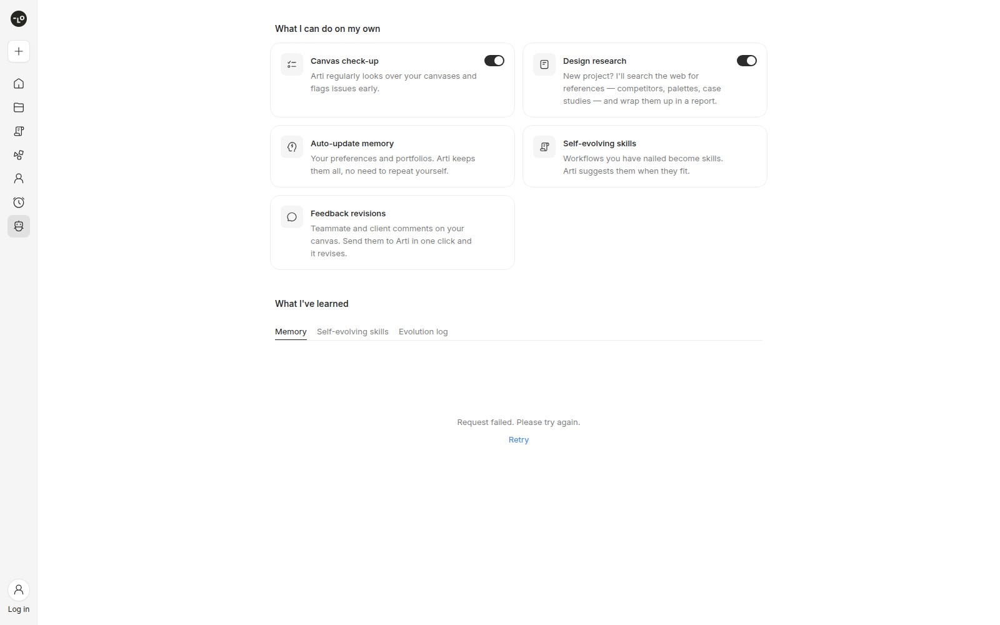

Lovart Arti · 产品 · 设计软件 Beta
Arti把重复设计变成可排程任务，但验收仍须由人控制
2026-10-19 · date only · near-three-day
同一项目的完整分析。研究截止为14:00:02Z；来源核验与图片获取在后，不改变事件日期。

Lovart未登录公开界面；记忆区域请求失败，不代表登录后故障。 ↗ 原始图证任务与证据
Lovart的公开公告日期是2026年10月19日，厂商视频也显示同日发布；本刊于21日采集，故将其列为近三日补充，而非今日首发。公告称Lovart2.0已可在官网使用，Arti是既有设计智能体的新增能力层，不是独立替换产品。它面向的不只是偶尔生成一张图片的人，而是不断整理参考、解释品牌偏好、制作系列素材并处理客户反馈的设计师与营销人员。小品牌经营者可能同时使用和付费，代理公司则还需考虑设计师、客户审批者与采购者的不同责任。此处的目标用户判断来自公开工作流，不能据此认定这些人已经采用或愿意持续付费。
工作流与交接
旧流程中，用户每次打开项目重新说明风格，在其他页面搜参考，回到画布批量生成，再逐张检查和搬运评论。Lovart的功能对照页将2.0的增量放在这些交接处：记忆跨项目保留偏好，后台研究形成带来源的报告，委托任务按周期运行，反馈则锚定具体元素。操作入口包括侧栏的Arti和设计委托。用户先描述产物、约束与参考材料，选择结果写入的项目，再设一次性或日、周、月周期及单次积分上限，试跑后决定是否创建。结果进入项目画布，供人继续编辑；运行记录和实际积分消耗构成后续检查依据。它可能减少重新组织任务的工作，但尚无本刊测量证明节省多少时间。
控制与恢复
控制设计比“自主工作”这个名称更值得观察。官方说明允许查看、修改或删除记忆，并决定是否跨项目使用；这对同时服务多个品牌的人尤其重要，因为一位客户的审美偏好不应自动成为另一位客户的约束。Design Review先提出问题，修复需用户确认；评论可被整理成供人确认或修改的修订计划。用户仍要判断建议是否符合简报、引用是否可靠、客户意见是否互相冲突。基础文档还称编辑会生成新素材并保留原件，提供素材层面的回退路径；但这不等于整次委托可原子撤销，也不证明失败后的自动重试、部分完成恢复或积分退还机制。本轮只读公开资料，没有执行生成、排程或恢复测试。
采用条件与成本
采用门槛需要按实际计费口径理解。10月21日读取的年付界面显示，Starter、Basic、Pro、Ultimate的月均展示价分别为$16、$27、$45、$99，其中后两档为促销，次年续费展示分别为$74、$166/月，仍按年计费；页面符号为美元符号，未通过结账确认ISO币种。这些不是本轮验证过的月付报价。四档Arti每日委托额度依次为2、4、8、10次，检查额度相同，研究额度为1、2、4、5次。免费方案虽有有限模型和每日积分，未确认是否包含Arti。积分消耗随模型、设置与任务复杂度变化，月度额度不会滚存；因此，预算应按最终接受的素材和返修消耗计算，不能把理论生成量直接当成可交付产能。
实验与适用范围
手工替代仍然成立：日历提醒、固定简报、参考板、设计模板和人工检查可以完成相同任务链，代价是跨工具交接。模板型编辑器或脚本批处理也是需要比较的同任务方案；若工作只是确定性的尺寸调整或导出，增加记忆与智能体配置未必划算。Arti更值得验证的场景，是持续需要研究、变体制作和反馈整理的同一品牌工作。最小实验可以选一组真实但适合试验的活动素材，与现行流程比较合格成稿数、人工修正量、遗漏约束、积分成本及出错后的接管负担。如果节省的协调时间被检查错误和维护记忆抵消，就应推翻“值得迁移”的判断。公开Arti页面在未登录状态显示功能入口，但记忆区域返回请求失败；这只能说明本轮访问范围，既不证明登录后的故障，也不构成功能验证。
← 回到项目，继续翻页